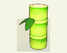
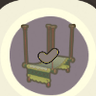
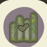

首页 / 云果
云果
你、你好~！我叫云果，很开心认识你。希望以后能跟你学习种植！
生日
9月19日
喜爱
| 图标 | 名称 |
|---|---|
| 外婆菜饭 | 外婆菜饭 |
| 苹果 | 苹果 |
| 竹香苹果冰 | 竹香苹果冰 |
 | 竹子 |
好感
绿色、肥料、红色、农牧装饰、竹制
反感
黑色、塑料
亲密度等级奖励
| 等级 | 类型 | 奖励 |
|---|---|---|
| 1 | 点头之交 | 交换联络方式：可在星湾查看友邻相关信息 |
| 2 | 点头之交 | 随心会面：可在星湾邀请友邻来访 |
| 3 | 同频友伴 | 邀请入住：可邀请友邻入住 |
| 4 | 同频友伴 | 日常合影：可与友邻一起合影 |
| 5 | 同频友伴 | 推荐穿搭：可为友邻推荐服饰穿搭 作物浇水：云果会帮忙给星球上的作物浇水 |
| 6 | 心之牵绊 | 米友家装：可通过米友家装帮助友邻装修 |
| 7 | 心之牵绊 | 邀约同行：可邀约友邻同行陪伴 |
| 8 | 灵魂羁绊 | 蔬果作物园：可在星球布置并种植云果 专属称号 |
历程
- 结伴而行：累计与云果星海旅行3次
- 携手共进：累计与云果星海旅行20次
- 同心协力：累计与云果星海旅行50次
- 一见如故：累计主动与云果闲聊10次
- 无话不谈：累计主动与云果闲聊30次
- 相谈甚欢：累计主动与云果闲聊50次
- 倾心而谈：累计主动与云果闲聊100次
- 心有灵犀：累计主动与云果闲聊150次
- 劳动光荣：累计在云果的蔬果作物园收获10个作物
- 硕果累累：累计在云果的蔬果作物园收获50个作物
- 五谷丰登：累计在云果的蔬果作物园收获3000个作物
- 乐于助人：累计完成云果的友邻事件2次
- 无微不至：累计完成云果的友邻事件20次
- 全心全意：累计完成云果的友邻事件50次
- 略表心意：累计赠送云果礼物2次
- 锦上添花：累计赠送云果礼物20次
- 称心如意：累计赠送云果礼物50次
友邻印象
足迹*1000
足迹*500
足迹*500交换日记
| 类型 | 标题 | 日记 |
|---|---|---|
| 纪念日 | 萌芽的愿望 | 独自走过一程，终于有了新家。 谢谢你~，邀请我住下来。 我会好好珍惜这次机会， 为你种植各种各样的蔬果作物，让星球，大丰收！ |
| 温暖陪伴 | 独立生活第一步 | 我要学会做饭，养活自己。 我会好好努力的~！ 希望有一天， 我 也能给你做很多好吃的。 |
| 温暖陪伴 | 护身符与鱼 | 天老爷保佑~！ 谢谢你，帮我找回了姥姥求的护身符。 我完全不晓得鱼连这个都吃。 为啥子连鱼都这么凶的？ |
| 温暖陪伴 | 竹果丰年小屋 | 现在，房屋在风和阳光里，会有竹林红果的味道。 房屋就像我们的土壤，充足、肥沃，我们才能「长」得好。 谢谢你，一切都特别特别好~！ |
| 温暖陪伴 | 有口难言的配肥方法 | 今天谢谢你帮我跟墨尔斯讲话。 我当时真的很紧张，毕竟问别人要那个，说不出口…… 今天学会的鱼菜共生种植架，好厉害！ |
| 特别回忆 | 闷果儿 | 原来小时候的云果，是一个不爱说话的果儿。 |
| 温暖陪伴 | 真的打不过 | 天老爷~！谢谢你帮我报仇。 为啥子连螃蟹都这么凶的？ 你给我捉的螃蟹，刚才还想夹我手，我给了它一片菜叶子…… 不晓得能不能养得活。 |
| 温暖陪伴 | 不是一个人的「结果」 | 独立生活不是我自己一个人做所有事， 也不是孤独的生活。 我找到了一个很好、很好的星球生活， 遇到了一个很好、很好的你。 |
本页为《星布谷地》玩家图鉴资料页，内容整理自玩家资料站与游戏内数据，仅供参考；游戏版本更新后数据可能滞后。
站点由 GitHub Pages 静态托管 · 与游戏官方及 B 站 WIKI 无隶属关系 · 游戏素材版权归原权方所有。